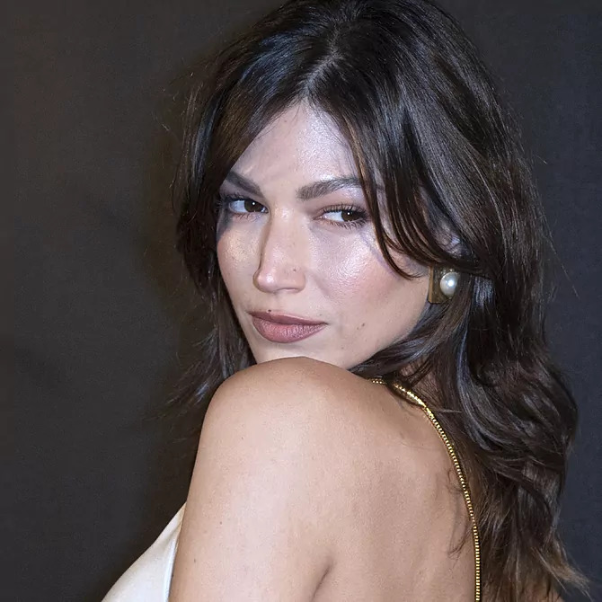
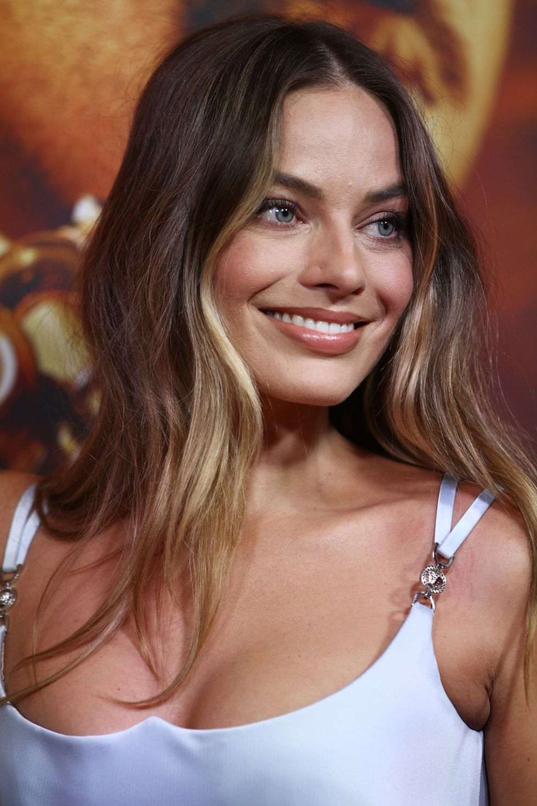
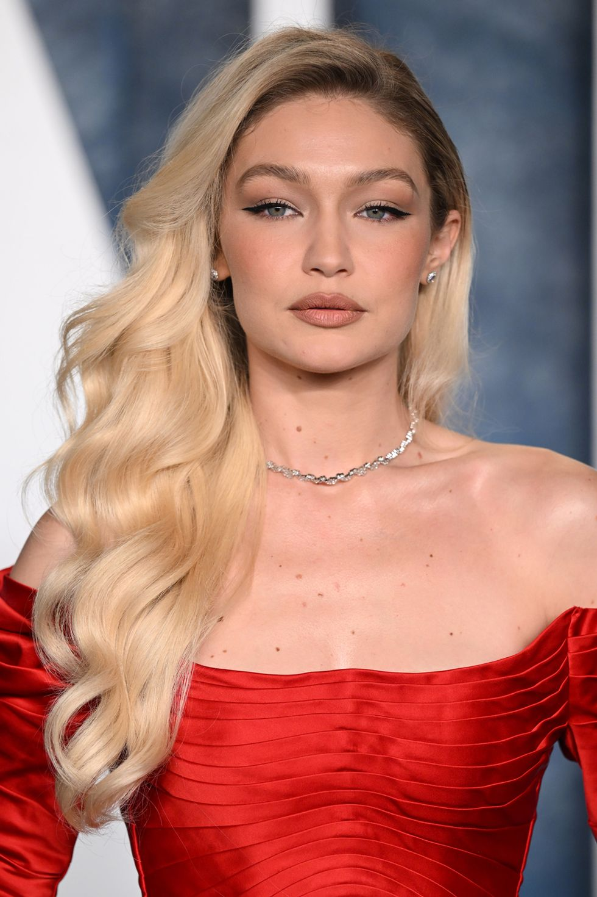
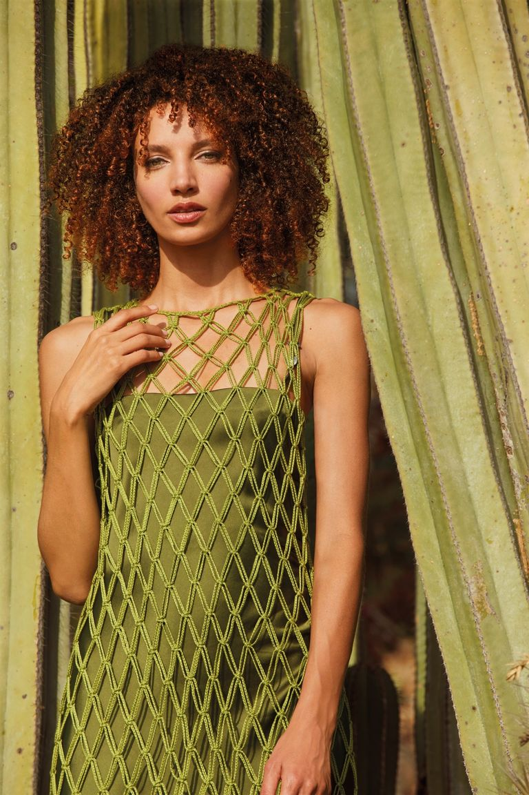

Cabello
 A la hora de apostar por un cambio de look, es mucha (y muy variada) la inspiración que recibimos. En un primer lugar, vemos los estilos que proponen los diseñadores sobre la pasarela. Consecuentemente, también somos testigos de lo que reina en el 'street style'. En segundo lugar se encuentran las alfombras rojas, donde las 'celebrities' nos crean auténticas necesidades 'beauty' en cada pose. Y, por último, acudimos a las redes sociales (Pinterest, sobre todo) en busca de los últimos detalles para saber qué pedir exactamente en nuestra próxima cita en el salón.
A la hora de apostar por un cambio de look, es mucha (y muy variada) la inspiración que recibimos. En un primer lugar, vemos los estilos que proponen los diseñadores sobre la pasarela. Consecuentemente, también somos testigos de lo que reina en el 'street style'. En segundo lugar se encuentran las alfombras rojas, donde las 'celebrities' nos crean auténticas necesidades 'beauty' en cada pose. Y, por último, acudimos a las redes sociales (Pinterest, sobre todo) en busca de los últimos detalles para saber qué pedir exactamente en nuestra próxima cita en el salón.
Tendencias de cortes de cabello
En este sentido presenciamos la convivencia de dos tendencias completamente opuestas. Por un lado, la nueva necesidad de dejarse el pelo largo. Por otra, los siempre acertados cortes de pelo que favorecen, refrescan y hasta quitan años. Además, también somos testigos de la vuelta de dos microtendencias de lo más poderosas: el flequillo en todas sus versiones (cortina, corto, asimétrico, largo, de lado...) y la presencia de capas. Esto último ha sido el alivio 'beauty' de millones de mujeres cuyo pelo fino pedía a gritos un 'extra' de volumen.
 |
Corte mariposa Es ideal, para chicas con poco pelo y/o muy fino. Esto se debe a que aporta volumen, densidad y movimiento sin esfuerzo. |
 |
Long bob Se trata de un corte perfecto para las que quieren un cambio visible pero no drástico. |
 |
El flequillo cortina Estos se peinan, casi siempre, a través de una onda muy suave y hacia fuera, dándoles forma en el sentido de las agujas del reloj para que el flequillo se abra sutilmente, fundiéndose con el resto de la melena. |
 |
El flequillo minimal La clave de este otro estilo reside en dos factores: la poca cantidad de pelo empleada y la forma en que se corta desfilado y acorde a la mandíbula de cada persona. |
 |
Shag Lo ideal es llevarlo con un flequillo cortina con las puntas despejadas hacia los lados para enfatizar la inspiración de los setenta. |
 | Octopus cut Con muchas capas y con flequillos abiertos y volumen superior en la melena para caras redondeadas o cuadradas que buscan volumen en la zona superior de la melena. |
Tintes en tendencia
En términos de coloración, hay una tendencia tan clara que casi se antepone al resto: la naturalidad. Esta se consigue de dos formas: o bien dejando crecer el color de raíz, o bien apostando por unas mechas sutiles y que casi parezcan propias. En este sentido, hablamos de un inesperado 'boom' del pelo castaño, pero también del moreno. Ambos se llevan integrales, casi sin mechas y/o reflejos y bien brillantes. Sin embargo, las rubias pueden estar tranquilas porque también las melenas más claras siguen siendo tendencia. En este caso, crecen en popularidad los subtonos dorados, así como los rubios muy claros pero con raíz natural.
|  | Bronde Esta tendencia en coloración nos parece perfecta para las rubias que quieran ser castañas pero de una forma sutil y/o progresiva. |
 | Rubio con raíz Hay una microtendencia asociada a la misma y es la de presumir de rubio pero con raíz natural y/o castaña. |
 |
Moreno integral Las 'celebrities' que lo tienen de forma natural han dejado de teñírselo y las que no, se lo están tiñendo, ahora luce la melena morena más atractiva. |
 | Alabama Peach Un look castaño caramelo que aporta luminosidad y calidez al rostro con ligeros efectos sunlight. Se consigue realizando un color, muy natural, con multireflejos que van desde el melocotón cobrizo hasta el suave avellana |